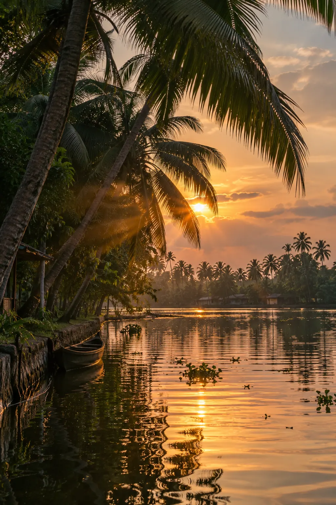

Alleppey, officially Alappuzha, sits where Kerala's backwaters meet the sea. Couples, families and solo travellers all find something here, and these are the ten best things to do.
Stay at a local homestay like Alleppey Homes. Your hosts know the canals, shops and festivals that guidebooks skip.
Water first, then home
Start with the backwaters themselves, then settle into a Kerala family home.

1. A slow drift on a kettuvallam
A houseboat cruise on the backwaters is the classic way to see Alleppey. Traditional kettuvallams glide through quiet channels while meals are cooked onboard.
What to expect
- Durations: 2-hour sunset cruise, half-day, full-day or overnight
- AC or non-AC rooms, attached bathrooms, dining area, upper deck
- Fresh Kerala meals from an onboard chef
Pro tip: Book through a trusted local operator like us to avoid overcharging. October to March has the best weather.
2. A seat at a family table
A Kerala homestay puts you in a local family's house, which shows you everyday life in a way hotels can't.
Why choose a homestay
- Home-cooked Kerala meals
- Personal attention and local tips
- Culture, festivals and traditions
- Supports local families and sustainable tourism
3. Through the narrow canals
A canoe ride through the village backwaters reaches canals large houseboats can't, and gets you close to village life.
Highlights
- Watch local fishermen at work
- See coir-making and toddy tapping
- Spot birds and wildlife in their habitat
Shore, temple and lane
Beach, temple, birds and village lanes, all within an easy day trip.

4. Sunset at the pier
Alleppey Beach, also called Alappuzha Beach, is made for sunsets, with a historic pier reaching into the Arabian Sea.
Things to do
- Evening walk on the pier
- Coconut water and Kerala street snacks
- Local seafood at beachside shacks
5. A temple known for sweet payasam
The Ambalapuzha Sree Krishna Temple is an ancient temple 14 km from Alleppey, famous for its palpayasam (sweet rice pudding) offering.
What makes it special
- Traditional Kerala architecture
- Daily palpayasam offering (must try)
- Important pilgrimage site for Kerala Hindus
- The annual Champakulam boat race starts from here
6. Where the migrants land
Kumarakom Bird Sanctuary is a 14-acre sanctuary made for birdwatching. Visit November to February, when migratory birds arrive.
Birds to spot
Siberian storks, egrets, herons, darters and kingfishers.
7. Lanes by bicycle
A village cycling tour is easy to do yourself. Rent a bicycle and ride through paddy fields, coconut groves and village lanes at your own pace.
Recommended route
Stops include toddy shops, coir villages, temples and backwater views.
Dance, feasts and a race
Dance, feasts and a famous boat race: the best of Kerala beyond the water.

8. Faces in lamplight
A Kathakali dance performance is Kerala's classical dance-drama, told through heavy costumes, painted faces and expression.
Where to watch
Several cultural centres in Alleppey offer evening performances.
9. A feast on banana leaf
A food tour of Alleppey is a tour of Kerala cuisine at its best. Don't miss these specialities.
- Karimeen Pollichathu: pearl spot fish grilled in banana leaf
- Appam with Stew: rice pancakes with coconut milk curry
- Kerala Sadya: banana-leaf feast of 20+ dishes
More must-try dishes
- Toddy: fresh palm wine at local toddy shops
- Puttu & Kadala: steamed rice cake with chickpea curry
- Fish Moilee: mild coconut milk fish curry
10. Thunder on Punnamada Lake
The Nehru Trophy Boat Race is held in August. Over 100 rowers power massive chundan vallams (snake boats) down the lake.
About the day
The race comes with cultural programs through the day.
Before you go
October to March, when the weather is pleasant.
Cochin Airport (85 km) or Alappuzha Railway Station, in the city.
₹3,000 to 5,000 per day, mid-range, including stay, food and activities.
2 to 3 days is ideal for the main attractions.
Light cotton clothes, sunscreen, a hat and mosquito repellent.
Ask your homestay host about secret canals, the best toddy shops and local festivals during your stay. No travel app carries that knowledge.
Come slowly
A day on a houseboat in Alleppey, an afternoon on village lanes, a plate of karimeen by the water: the best of this place is slow and local.
Eat local, stay local and wander past the tourist hotspots. A family homestay in Alappuzha is the easiest way to do all three.
Plan your trip: explore our houseboats in Alleppey and family homestay, or read more on: